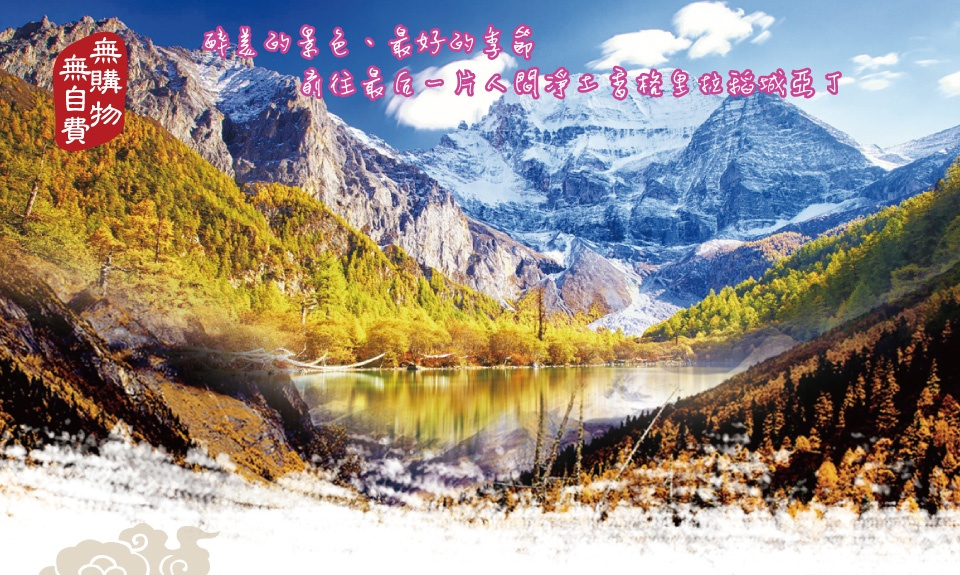
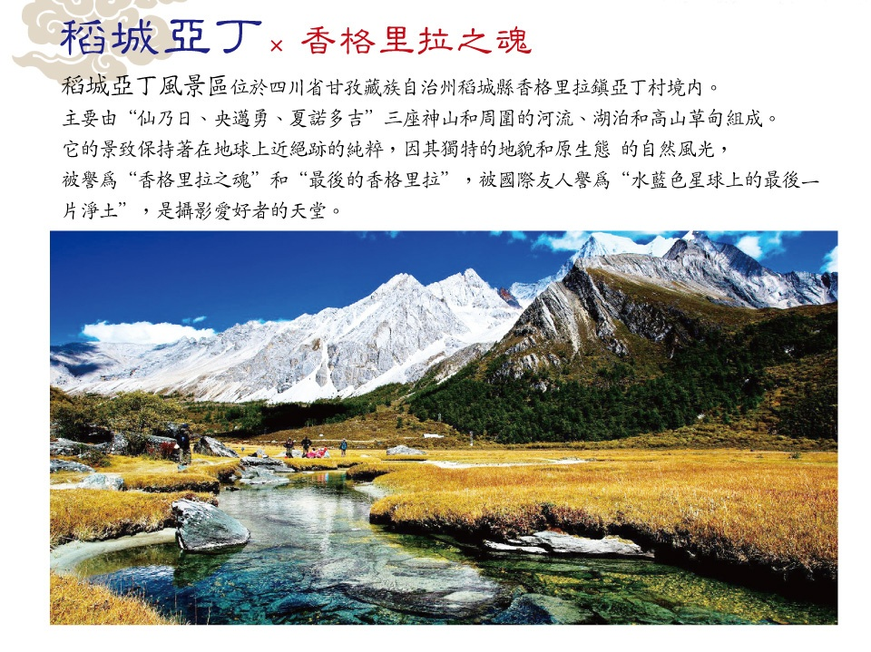
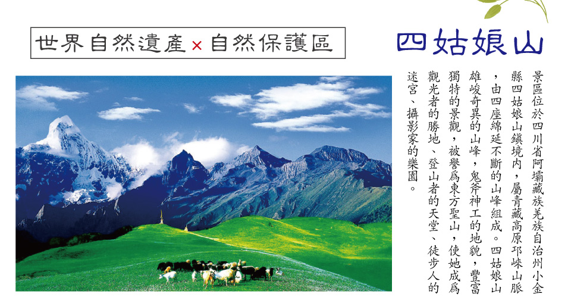
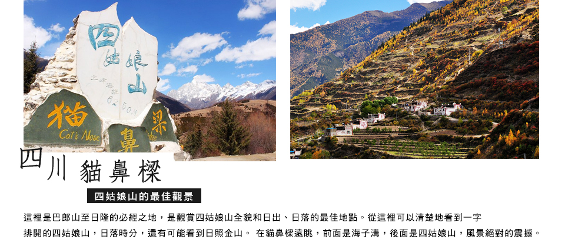
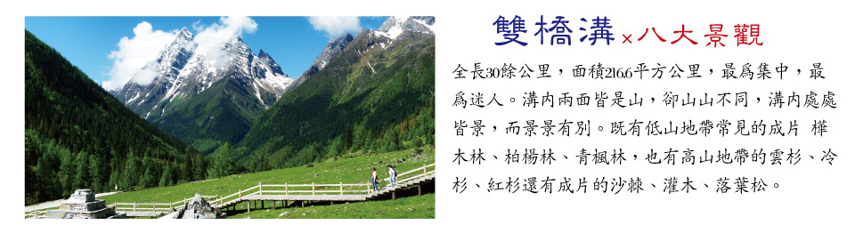
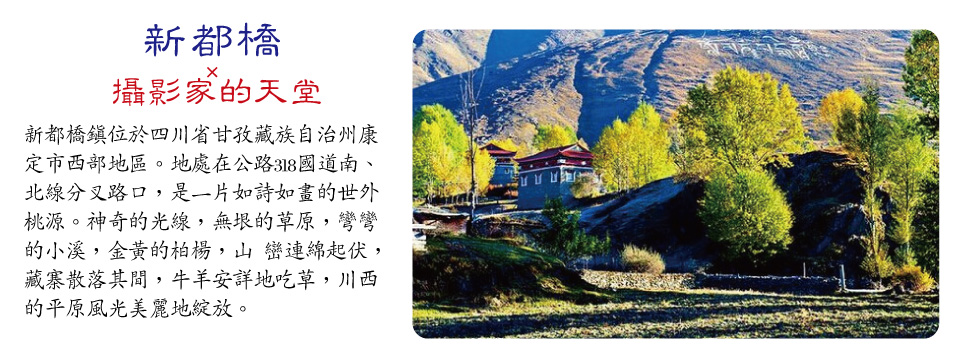
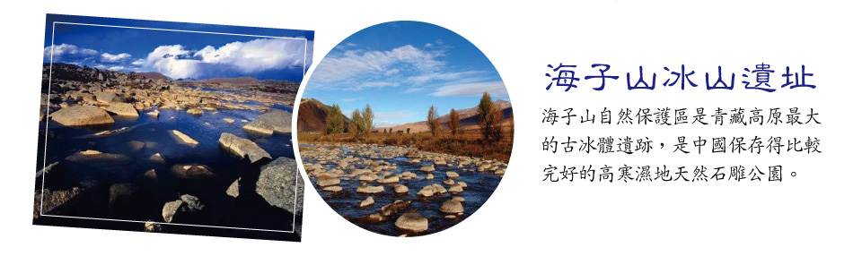
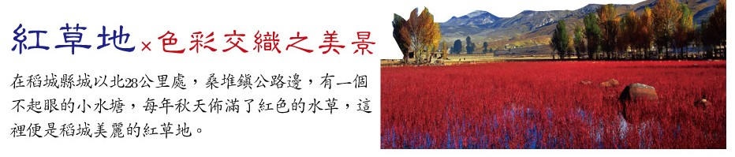
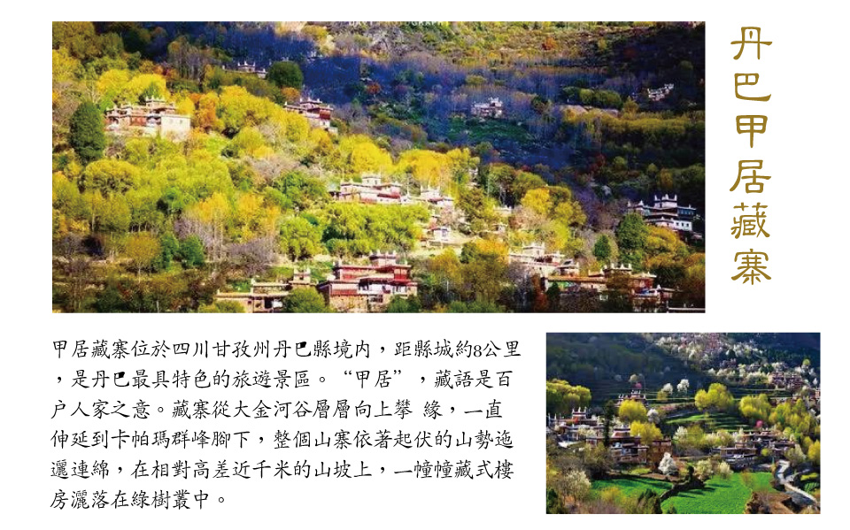
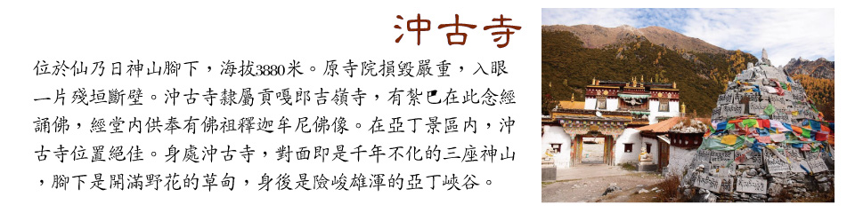

【最後的香格里拉】稻城亞丁自由行8日
稻城亞丁 香格里拉之魂
行程簡介
.jpg)
旅遊資訊
購物站
★保證不進購物店、旅遊品質有保障。
自費項目
★全程無自費
車購
★導遊在遊覽車上會推薦當地土特產等小物,自由選購,絕不強迫!
航班參考
四川航空(每週1.3.5.7飛)
| 天數 | 航空公司 | 航班編號 | 起飛地 | 起飛時間 | 目的地 | 抵達時間 |
|---|---|---|---|---|---|---|
| 第一天 | 四川航空 | 3U3982 | 松山 | 18:35 | 成都 | 21:55 |
| 第八天 | 四川航空 | 3U3981 | 成都 | 13:55 | 松山 | 17:20 |
行程內容
第一天 臺北松山機場 - 成都
今日帶著愉快雀躍的心情於臺北松山機場,搭乘豪華客機飛往天府之國四川省【成都市】。
【成都】四川省會成都,位於四川省中部,川西平原腹地,轄區總面積12.6平方公里,人口1100多萬,是中國西南地區最大的現代化都市。成都不僅地處全川中心,同時也是四川省政治、經濟、文化、旅遊的核心,成都不僅人文景觀豐富,自然風貌也獨具一格,早在1000多年前的唐代,詩人就唱出了「窗含西嶺千秋雪,門泊東吳萬裡船」的名句。
第二天 成都-四姑娘山【貓鼻樑觀景台、雙橋溝風景區(含環保車)】-丹巴
【貓鼻樑觀景台】貓鼻樑是觀賞四姑娘山全景的最佳位置,站在貓鼻樑放眼望去,四座山峰依次排列,雲霧繚繞時,四姑娘山充滿神秘色彩,猶如仙境般美麗。
【雙橋溝風景區】全長30餘公里,面積216.6平方公里,最為集中,最為迷人。溝內兩面皆是山・卻山山不同・溝內處處皆景,而景景有別,真可謂“橫看成嶺側成峰,遠近高低各不同”。在海拔400米的雙橋溝裡,既有低山地帶常見的成片樺木林、柏楊林、青楓林,也有高山地帶的雲杉、冷杉、紅杉還有成片的沙棘、灌木、落葉松。這種立體分佈的植物與雄狀奇特的高山一結合,就構成了包括五色山在內的雙橋溝八大景觀。
第三天 丹巴【丹巴甲居藏寨(含環保車)】-八美【雅拉雪山觀景台遠眺、塔公草原風光、木雅金塔、新都橋攝影天堂自然風光】-穿越高爾寺山隧道-雅江
【丹巴甲居藏寨】「甲居」藏語是百戶人家之意。藏寨從大金河谷層層向上攀緣,一直伸延到卡帕瑪群峰腳下,整個山寨依著起伏的山勢迤邐連綿,在相對高差近千米的山坡上,一幢幢藏式樓房灑落在綠樹叢中。或星羅棋佈,或稠密集中,或在高山懸崖上,或在河壩綠茵間,不時炊煙嫋嫋、煙雲繚繞,與充滿靈氣的山谷、清澈的溪流、皚皚的雪峰一起,將田園牧歌式的畫卷展示在人們眼前,以一種藝術品的形態存在。2005年由《中國國家地理》雜誌組織的選美中國活動中,以甲居藏寨為代表的「丹巴藏寨」被評為「中國最美的六大鄉村古鎮」之首。
【雅拉雪山觀景台】雅拉雪山,藏語全稱為"夏學雅拉嘎波"(意為東方白犛牛山),系中國藏區四大神山之一。位於四川甘孜州康定、道孚和丹巴三縣的交界處,海拔5884米,與它西北方向的墨爾多神山遙遙相對。山頂終年積雪,是康巴地區一座著名的神山,雅拉河即發源於此。
【塔公大草原】海拔3730米的高原地帶,川藏公路穿境而過,是甘孜州最著名的草原。自康定沿川藏線西行,翻越折多山,過新都橋後北行37.3公里到達塔公寺。沿線的河流、草原、森林、山體、寺廟、藏房建築和濃郁的藏鄉風情構成該景區。
【木雅金塔】又名木雅尊勝塔,是一座壇城式佛教寺廟建築,占地35畝。多吉紮西活佛為紀念十世班禪大師于此灌頂布法而修建的佛塔。金塔位於雅拉神山、夏古冬青山、文殊山、觀音山等八座神山所環繞的中心,藏語稱"古汝塘",意為"蓮師道場"。
【新都橋攝影天堂】新都橋鎮2公里外沿線10公里的風景長廊,彎彎的小溪,金黃的柏楊,被譽為「光與影的世界」。新都橋是川藏線上的一個亮點,被稱為「攝影家的走廊」,還能在這遠眺蜀山之王貢嘎山・欣賞美景,沿途風光也不錯。這裡的藏式民居極有特點,有很寬敞的白牆院子和朱漆大門,房屋大都採用石料建造,朝陽而居,採光極好。
第四天 雅江-天路十八灣觀景台-理塘【無量河谷、海子山自然保護區、長青春科爾寺(含電瓶車)】-稻城【萬畝青楊林、稻城桑堆紅草地】-日瓦
【天路十八灣觀景台】位於雅江開往理塘的路上,剪子灣山的天路十八彎,海拔4500多米。從觀景台俯瞰,曲折的胳膊肘彎,有一種震撼的曲線美。
【海子山自然保護區】海子山自然保護區是青藏高原最大的古冰體遺跡,是中國保存得比較完好的高寒濕地天然石雕公園,更是喜馬拉雅山造山運動的歷史見證,素以「稻城古冰帽」著稱於世。平均海拔4500米,區內怪石林立,千姿百態,景象萬千,鬼斧神工。湖泊星羅棋佈,共有1145個大小湖泊,其規模密度是獨一無二的,一個個湖泊就像天空不經意滴下的眼淚,灑落於塵世間,凝聚成一顆顆光彩奪目的珍珠,晶瑩剔透,攝人心魄,引人入神,歎為觀止。因高山湖泊藏族又叫海子,所以得名海子山。
【長青春科爾寺】又稱理塘寺,於1580年由第三世達賴喇嘛索南嘉措創建,是康區歷史最悠久,規模最大的藏傳佛教黃教寺廟。原為黑教寺廟,明在萬曆年間三世達賴途經該地時改為黃教並為其開光。寺廟占地500餘畝,寺容僧侶4300多人,常駐 800人左右,為康區第一大格魯派(黃教)寺廟,素有「康南佛教聖地」之稱。
【萬畝青楊林】秋遊稻城,城邊、溪旁、河畔、村前,隨處可見金燦燦的楊樹林,它們以其挺拔俊秀的身姿,裝點著最後香格里拉的迷人秋色。
【稻城桑堆紅草地】位於四川省甘孜州稻城縣,植物由綠變紅的原因是秋天的氣候條件在促使葉子中糖的積累和變化,糖經過複雜的反應鏈積累成紅色色素,導致秋葉變紅,這是植物衰老的標誌。極目遠望,一片紅彤彤的景致映入眼簾,紅得那麼熱烈,那麼豔麗,也那麼醉人。在或黃或綠的白楊樹的襯托下,燦燦生輝,嫵媚無比。
第五天 日瓦-亞丁【亞丁風景區(含環保車+電瓶車)、洛絨牛場、沖古寺、珍珠海、欣賞三座神山(朝拜央邁勇、夏洛多吉、仙乃日神山)】
【亞丁風景區】亞丁藏語意為「向陽之地」。亞丁自然保護區位於四川省甘孜藏族自治州稻城縣香格里拉鎮,距離稻城縣城約100公里。雖然人們習慣稱「稻城亞丁」,實際上稻城和亞丁是兩種截然不同的景觀。稻城主要欣賞高原壩子的田園風光,以及海子山古冰帽遺跡;亞丁主要以品字形排列的三座神山聞名天下,也被稱為「最後的香格里拉」和「藍色星球上的最後一片淨土」。1928年,美國植物學家、探險家約瑟夫·洛克,到達此地,回國後在美國《國家地理雜誌》上撰文並刊登所攝照片,將亞丁介紹給了全世界。
【絡絨牛場】被「日松貢布」三座神山環繞,貢嘎河從草場穿梭,林間溪流潺潺,與牧場木屋交相輝映,構成了一幅原始而又迷人的景色,令人們進入返樸歸真的境界。洛絨牛場是亞丁景區內最著名的住宿地點之一,海拔4150米,是附近村民放牧的高山牧場,成群的牛羊在這裡享受著充足的陽光、青青的草地和純淨的湖水。雪峰、森林、草場、溪流、湖泊、瀑布和牧場木屋相映成趣。
【沖古寺】位於仙乃日神山腳下,海拔3880米。原寺院損毀嚴重,入眼一片殘垣斷壁。沖古寺隸屬貢嘎郎吉嶺寺,有紮巴在此念經誦佛,經堂內供奉有佛祖釋迦牟尼佛像。在亞丁景區內,沖古寺位置絕佳。身處沖古寺,對面即是千年不化的三座神山,腳下是開滿野花的草甸,身後是險峻雄渾的亞丁峽谷。沖古寺猶如天堂之門,守護著神聖的香巴拉王國。1928年,約瑟夫洛克來此考察時,曾在沖古寺住了三天,他透過寺廟的窗戶,遠眺月亮下寧靜祥和的亞丁村,這就是詹姆斯希爾頓筆下《消失的地平線》中美麗的藍月山谷的原形。
【卓瑪拉措(珍珠海)】是仙乃日雪峰下的一個海子,又叫「珍珠海」,傳說是仙乃日左邊白度母的魂湖,美麗的卓瑪拉措,像一顆鑲嵌在蓮花寶座上的綠寶石,碧波蕩漾,水天一色。雲影波光中,透出無限清麗,是最接近仙乃日雪峰的地方。它的湖水直接與仙乃日的冰雪相接,沒有任何過渡。在亞丁再沒有什麼地方能如此完整而真切地感覺仙乃日雪峰帶給您的震撼。湖形為近橢圓,橢圓的長軸方向與仙乃日雪峰垂直,湖水十分清澈,水色呈深綠色,這與亞丁的大多數呈藍色的海子完全不一樣,這種水的顏色也是因為碳酸鹽岩石的鈣質成分融于水後,經陽光的反射、折射和衍射的結果。湖的四周由雲杉、冷杉組成的暗針葉林和紅杉等組成的亮針葉林混雜在一起。這是出過許多精彩攝影作品的地方。天空晴好的時候,雪山會倒映在湖面上,森林、藍天、白雲的倒影同時也會出現在湖面上,天空、大地、海子交織在一起,凝視雪山,心和這裡的風景一樣安詳靜謐,這一刻卻十分安寧平常。
【三座神山】亞丁的三神山是指這片橫亙在川滇交接的雪山群中最高的三座山峰,北峰仙乃日(6032米)·南峰央邁勇(5958米),東峰夏諾多吉(5958米)。在當地藏民的信仰中,三座神山依次分別象徵著佛教中的觀音菩薩,文殊菩薩,金剛手菩薩(藏傳佛教的金剛手菩薩有可能也就是漢傳佛教的大勢至菩薩)。三座雪山,南北向分佈,呈品字形排列,統稱「念青貢嘎日松貢布」,意為:終年積雪不化的三座護法神山聖地。藏傳佛教中稱其為「三怙主雪山」,是藏民心中的神聖之地。
第六天 日瓦【稻城白塔群、桑堆小鎮】-理塘【毛埡大草原風光、兔兒山風光】-康定【折多山觀景台】
【稻城迎賓白塔】位於四川省稻城線,藏語叫郎傑曲登。據說,當年釋迦牟尼涅槃之時,眾多眷屬祈求世尊法身長駐,佛陀變矚修尊勝塔,並親自加持開光,以此代表法身。稻城白塔純寺方型的佈置是稻城白塔底座·塔尖,塔基座安放著一排排的轉經輪,以供藏民虔誠膜拜。
【毛埡大草原】位於四川省甘孜州理塘縣縣城以西,群山的環抱之中,如海的草原鬱鬱蔥蔥。夏日,湛藍的晴空下,牛羊成群,綠草連天,盛開的野花姹紫嫣紅,打一個滾就是一身花香;秋天,晴空高遠,雲朵潔白,草木金黃;冬日則是白雪皚皚,原馳蠟像。季節的變化賦予大草原無邊的神韻與風姿,這就是毛埡大草原。
【兔兒山】位於海子山自然保護區的北部,海拔4696米,遠觀就像兔子耳朵屹立在風中,山勢十分奇特,長在寸草不生的山峰之上,頗為壯觀宏大。天氣好時坐車沿著公路走過,遠遠望去,仿佛是小兔子受到了驚嚇。周圍是陡峭的冰蝕峰林地貌,映襯著晶瑩剔透的海子門。
【桑堆小鎮】風景綺麗,在公路沿線的牧場開闊平展,河流平緩如鏡。遙望遠處,在起伏的山巒間散落著村落、牧人、牛羊,呈現一派寧靜祥和的景象。
【折多山觀景台】位於四川省甘孜州境內,是重要的地理分界線,折多山以東是山區,以西則是青藏高原的東部,真正的藏區。「折多」在藏語中是彎曲的意思,寫成漢語又是「折多」二字。站在山頂上,藍天白雲下,遠處山巒高低起伏,近處白塔聳立,經幡飛舞,景色十分震撼。
第七天 康定【瀘定橋風光】-雅康高速-成都【太古里步行街】
【瀘定橋風光】位於四川省瀘定縣,為橫跨大渡河的鐵索懸橋,是四川內地通往康巴藏區的重要通道。課本裡耳熟能詳的飛奪瀘定橋的故事 而如今你可以親自感受它的驚險。
【太古里步行街】位於成都市春熙路旁,不同於傳統的室內購物中心,成都遠洋太古里的建築設計獨具一格,以人為本的「開放里」概念貫穿始終。通過保留古老街巷與歷史建築,再融入2-3層的獨棟建築,川西風格的青瓦坡屋頂與格柵配以大面積落地玻璃幕牆,成都遠洋太古里既傳統又現代,營造一片開放自由的城市空間。在愈加擁擠而不斷向高發展的都市中心,成都遠洋太古裡保留一片低密度開闊空間,陽光與雨露、鳥語與花香,種種體驗變得直接而與眾不同。
第八天 成都 - 臺北松山
早餐後前往機場,辦理出境手續後,搭乘豪華客機返回臺北松山機場。
#以上行程順序僅供參考,實際行程順序以當地旅行社為準#
#本行程團費所含景點門票均已分攤老人/小孩等優待票差價,亦不另行退還差價,敬請見諒!#